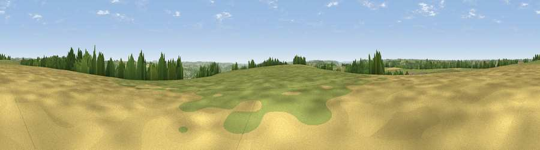

Viewpoint near Rawridge
#15951 in England · top 34% of its area beats it · near RawridgeThe view, rendered

A 360° render of this exact spot computed from the terrain model, tree cover and land cover — summer colours, afternoon light, calibrated against photographs of famous viewpoints. Real trees, hedges and buildings will differ in detail.
The panorama
Grey silhouette: terrain skyline in each direction (720 bearings, Earth curvature and refraction included). Dashed green: skyline with trees (+15 m) and buildings (+8 m) as obstacles. Blue strip: how far the ground is visible on each bearing.
Where the view opens
Wedge length = distance to the farthest visible ground on that bearing (vegetation-aware). Rings at 10, 25 and 50 km.
What fills the view
64% grassland · 21% woodland · 14% cropland ·
Angular shares of the visible panorama (visual magnitude), not map area. Landscape diversity 0.41 (0–1 Shannon).
Key numbers
More beautiful places nearby
The staircase of upgrades: each row has a higher view potential than everything closer. Driving times are estimates from straight-line distance, calibrated against real road routing — check an actual route before setting out.
| Place | Direction | Drive | Score |
|---|---|---|---|
| Viewpoint near Yarcombe | NE · 2 km | ~5 min | 63.3 |
| Viewpoint near Dalwood | SE · 5 km | ~10 min | 64.0 |
| Viewpoint near Membury | E · 6 km | ~14 min | 65.0 |
| Viewpoint near Combe St Nicholas | NE · 10 km | ~19 min | 67.9 |
| Viewpoint near Pitminster | N · 11 km | ~21 min | 73.1 |
| Viewpoint near Pitminster | N · 11 km | ~21 min | 74.2 |
| Hembury | WSW · 11 km | ~21 min | 75.9 |
| Viewpoint near Buckland St. Mary | NNE · 11 km | ~21 min | 77.3 |
50.84935, -3.11113 · source: screening · position refined by local search. Computed location — check access rights before visiting.